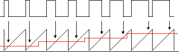

| Previous Section | Next Section | Index | Questions | Search the Text |
This section discusses a data transmission technique which is analog, single wire, and clock free. Pulse Width Modulation and it's close relation, Pulse Density Modulation, are commonly used for positional servo control, audio communication (cellular phones), and for providing low cost digital to analog conversion for such things as telephone tone generation.
With Pulse Width Modulation, PWM, pulses are continuously generated which have different widths but the same time between leading edges. The pulse width is proportional to the duty cycle of the signal, and can be viewed as representing an analog level. We have already seen how the timing module can be used to generate a pulse width modulated signal.
Analog signals can be easily used to pulse width modulate by using a sawtooth generator for the carrier and an analog comparator between the analog input and the sawtooth generator to generate the PWM output.

The digital approach to PWM involves having a counter and two registers, one to set the pulse width and the second to set the period, the time between pulses. At the start of the period, the counter is reset to zero and the output goes high. The counter is incremented by a clock. When the first when the value in the counter equals the value in the first register, the output goes low and when the counter value reaches that of the second register the cycle repeats. The value in the first register must be less than that of the second register and the duty cycle is pulse_width/period. To modulate, the first register value is varied.
A variation of PWM is Pulse Density Modulation, or PDM. In this case the pulse width remains constant while the period between pulses varies and represents the input level. The duty cycle changes as well. The same digital generator for PWM can be used for PDM by varying the value of the period register.
The Pulse Width Modulator module of the 68HCS12 is fully discussed in the PWM_8B8C Block Users Guide, but we will cover the basics of operation here. The PWM basically consists of two parts, a PWM generating counter circuit, as described above, and a clock divider which sets the rate that the counter is incremented. There are eight generators, four for each of two clock divider circuits. The generators have 8-bit counters/registers, however they can be paired to create up to 4 PWM generators each with 16-bit counters/registers.
The PWM channels connect via the Port P pins. These pins are also used for two of the three Serial Peripheral Interfaces (SPIs). Any pin can only be used by either a PWM channel or SPI at any time. If the pins are not being used by the PWM or SPI, they revert to general purpose I/O pins.
The period and pulse width are multiples of the clock period, so for finest resolution in duty cycle or period the clock should be as fast as possible. However the 8-bit counters and registers limit the period to 255 times the clock period, so a slower clock may be necessary to create slower periods. For maximum resolution of the duty cycle, the period register value needs to be as large as possible for the given operating period. To aid in obtaining the best possible value, a clock divider with a large number of possible dividers is provided.
There are two dividers, A and B. Divider A is used by PWM channels 0, 1, 4, and 5, while divider B is used by PWM channels 2, 3, 6, and 7. The dividers have two cascaded sections, the first being a prescaler which divides by a power of 2, from 20 to 27. The second is a divide by N which provides an addition division by N*2, for N=1 through 256. The second divider is optional. When not used, the division factor is 2M, for M=0 through 7. If the second divider is used, the division factor is 2M+1*N.
The following registers are used to enable the PWM channels and initialize the clock dividers:
| Register | Bit 7 | Bit 6 | Bit 5 | Bit 4 | Bit 3 | Bit 2 | Bit 1 | Bit 0 |
|---|---|---|---|---|---|---|---|---|
| PWME | PWME7 | PWME6 | PWME5 | PWME4 | PWME3 | PWME2 | PWME1 | PWME0 |
| PWMPOL | PPOL7 | PPOL6 | PPOL5 | PPOL4 | PPOL3 | PPOL2 | PPOL1 | PPOL0 |
| PWMCAE | CAE7 | CAE6 | CAE5 | CAE4 | CAE3 | CAE2 | CAE1 | CAE0 |
| PWMCLK | PCLK7 | PCLK6 | PCLK5 | PCLK4 | PCLK3 | PCLK2 | PCLK1 | PCLK0 |
| PWMPRCLK | 0 | PCKB2 | PCKB1 | PCKB0 | 0 | PCKA2 | PCKA1 | PCKA0 |
| PWMCTL | CON67 | CON45 | CON23 | CON01 | PSWAI | PFRZ | 0 | 0 |
| PWMSCLA | Bit 7 | Bit 6 | Bit 5 | Bit 4 | Bit 3 | Bit 2 | Bit 1 | Bit 0 |
| PWMSCLB | Bit 7 | Bit 6 | Bit 5 | Bit 4 | Bit 3 | Bit 2 | Bit 1 | Bit 0 |
A PWM channel is enabled for operation by storing a 1 in PWMEn where n is the channel number (0 through 7). The polarity of the channel is controlled by the corresponding PPOLn bit such that a high pulse (as shown above) requires a PPOL bit of one and a low going pulse requires a PPOL bit of zero. See the figure below. Each channel can select between its clock with or without the second divider. To use the second divider (clocks SA or SB) the PCLKn bit is one, otherwise (clocks A or B) the bit is zero.
The prescaler dividers are configured using the PWMPRCLK register. The field of bits 6 through 4 set the prescaler for channel B while the field of bits 2 through 0 set the prescaler for channel A. The divide by N for channel A (clock SA) is configured using register PWMSCLA, while that for channel B (clock SB) is configured using register PWMSCLB. The values in these registers are 1 through 255 to divide by 1 through 255, and the value 0 divides by 256.
The PSWAI and PFRZ bits in the PWMCTL register will cause the PWM channels to stop during WAI and STOP instructions. For most applications, these bits should remain in their default, non-stopping value, zero. The remaining bits in PWMCTL are used to configure 16 bit channels, described below.
Each channel has a counter register, PWMCNTn (where n is the channel number, 0 through 7), and two comparison registers, PWMDTYn for the pulse width (duty cycle) and PWMPERn for the period between pulses. Reading the counter is not particularly useful, however writing to the counter starts a new period (resets the counter to zero). The percent duty cycle is 100*PWMDTYn/PWMPERn when PPOLn=1, or 100*(PWMPERn-PWMDTYn)/PWMPERn when PPOLn=0.
Let's say an application requires a pulse 1 microsecond wide with a period between pulses of 10 microseconds. The system clock is 24MHz. To get a resolution of 1 microsecond, we use the cascaded clock dividers, with M=0 and N=12. Then the period register gets a value of 10 (10 times 1 microsecond) while the duty cycle register gets a value 1. We could use the following code for channel 0, using pin 0 of Port P:
movb #12 PWMSCLA ; clock rate 1usec
movb #1 PWMCLK ; select clock SA (PWMPRCLK default is 0)
movb #1 PWMPOL ; positive going pulse
movb #1 PWMDTY0 ; pulse width 1*1usec
movb #10 PWMPER0 ; period is 10*1usec
movb #1 PWME ; enable channel 0
The PWM channels have another operating mode where the pulse is centered rather than being left-aligned. This mode is set with the CAEn bit in the PWMCAE register. In this case the counter register is an up-down counter, and the period and pulse width times are doubled. However the duty cycle will remain the same. Note that the period starts and ends in the middle of the pulse; any changes to the duty cycle will occur over two pulses.
Adjacent even-odd channels (0&1, 2&3, 4&5, and 6&7) can be combined for 16 bit counters and registers. This allows finer adjustment of pulse width and period as the values can range from 0 to 65535. The CONnn bits in PWMCTL enable 16 bit operation for each of the four pairs. The PWME, PPOL, PCLK, and CAE bits used are those for the odd numbered channel while the 16 bit period and duty cycle registers are referenced using the even numbered channel.
Lets say an application requires a pulse 1 to 10 microseconds wide in units of 1 microsecond and that the period between pulses is 1 millisecond. The 1000 to 1 ratio between pulse width and period would mean that the 8 bit counters could not be used. Instead we will use channels 0 and 1 paired to make a 16-bit counter channel. The output will be pin 1 of Port P. We can set the clock rate as before.
movb #12 PWMSCLA ; clock rate 1usec
movb #2 PWMCLK ; select clock SA (PWMPRCLK default is 0)
movb #2 PWMPOL ; positive going pulse
movw #1 PWMDTY0 ; pulse width 1*1usec through 10*1usec
movw #1000 PWMPER0 ; period is 1000*1usec = 1msec
movb #$10 PWMCTL ; CON01=1 to configure 16 bit channel
movb #2 PWME ; enable channel
References: The Freescale Application notes Precision Sine-Wave Tone Synthesis using 8-Bit MCUs and Audio Reproduction on the HCS12 Microcontrollers.
Continue with The Analog to Digital Converter.
Return to the Index.